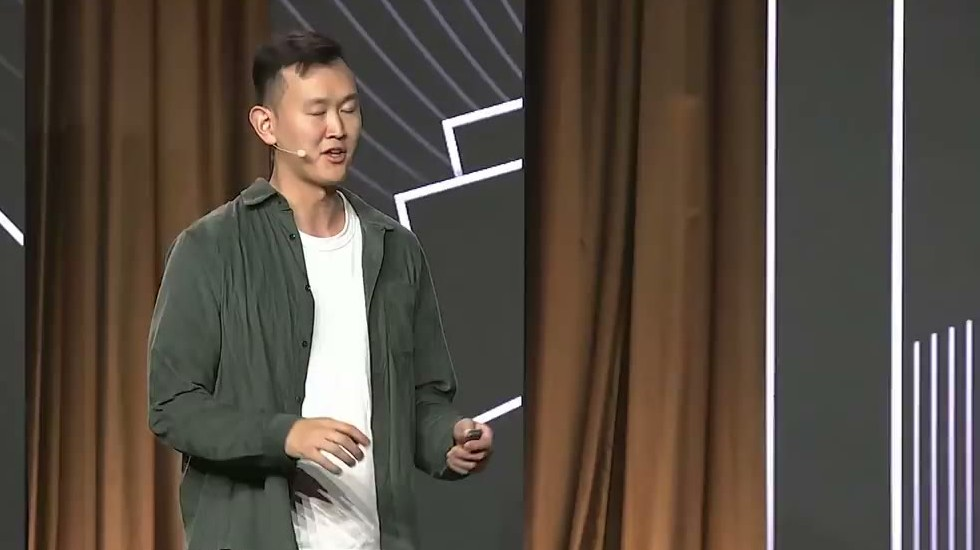

Investing is a compression function over two kinds of context
Long frames Coatue's work across public and private technology markets as taking high-conviction bets on major themes and watching them play out. As an engineer, he treats the firm as a single compression function. It takes two inputs, external context and internal context, and emits a three-part decision tuple: stock selection, position size, and timing. Emitted repeatedly over time, that stream of tuples constructs the portfolio.
That function is only as capable as the inputs wired into it. Long's rule for internal tooling is direct: every pixel a human analyst can read on a screen should be exposed to an agent via API. Hiring the best investors alive and handing them a workstation without logins to three-quarters of the firm's services renders their judgment useless. External context covers news, prices, and filings delivered programmatically without copy-paste. Internal context covers Coatue's live positions, liquidity and risk constraints around specific names, and decades of filed trade notes recording every decision the firm made or passed on and how it turned out.

“Every single thing that a human can see in pixels on the screen, an agent in your building should be able to see via API.”00:01:25
- A hedge fund compresses market and firm context into a time series of
(selection, size, timing)tuples. - Agents need direct API access to every data feed and internal tool a human sees on screen.
- Decades of structured trade and decision notes give agents institutional memory alongside live market feeds.
Evidence: transcript 00:00:00, 00:01:25
You cannot jam the world into one context window
Clean APIs still do not let you dump every feed and memo into one context window and read off three portfolio numbers. Long decomposes the top-level function into three sequential stages: gather, analyze, and decide. Every stage takes a typed input and hands its output to the next stage. Even basic filtering carries domain nuance: an article about the NBA is noise, while a local permitting story may constrain data center buildouts.
Zooming into the gather step on a single slice of market data shows why three functions quickly become dozens. Asian and Korean media coverage of the semiconductor supply chain has been central to AI markets, and AI can read Korean-language outlets far better than Coatue's non-Korean-speaking staff. Building that one ingestion step requires licensing and cleaning feeds over MCP or a CLI, choosing a chunking strategy, deciding whether charts enter the model as raw images or OCR text, filtering out unrelated coverage, choosing among translation, summarization, and structured extraction, and cross-referencing claims against internal notes and meeting recordings. Long treats each of those choices as a hyperparameter to tune against a moving target.
“So if you think about it, I probably can't just take all of those things, jam them into a context window, and get my magic three numbers and go home, right?”00:03:13
- The top-level firm function splits into
gather,analyze, anddecide, with typed inputs and outputs at each boundary. - Even one narrow
gatherworkflow over Korean semiconductor news exposes dozens of design choices. - Chunking, image handling, translation versus extraction, and internal cross-referencing act as tunable hyperparameters.
Evidence: transcript 00:03:13, 00:04:53
Four runners, and no glory in automating for its own sake
Once a workflow is broken into discrete lines of logic, each step needs an execution runner. Long puts every runner in four buckets: deterministic code, classical machine learning, LLMs, and people. In the transcript, the ASR model twice renders "code" as the prompt artifact Qodo when Long explains his first runner: for checking whether a price-to-earnings ratio sits below 15, deterministic code is fast, cheap, and reliable.
When relationships outgrow simple rules, classical statistics and regression models capture patterns that if statements miss. When inputs are unstructured text, such as summarizing Korean filings or earnings calls, LLMs and agents represent the state of the art. And when real-world judgment and interpersonal nuance matter, such as sitting down with a company's management team, a person remains the right runner. Long pushes back against forcing LLMs into every slot: the engineering goal is maximum absolute quality on each sub-function, not automation theater.
“There is no glory in automating things for the sake of automating things. The goal is not to take as many things and make them LLMs as possible.”00:07:29
- Every step in the graph runs on one of four primitives: deterministic code, classical ML, LLMs, or people.
- Simple thresholds belong in deterministic code; regressions belong in classical ML; meetings with management belong with people.
- Runner selection optimizes absolute step quality rather than LLM count.
Evidence: transcript 00:07:29
Branching control flow turns one news feed into a hyperparameter search
In practice, even Korean news gathering is a branching graph with feedback loops rather than a straight pipeline. Long's architecture slide wires korean_news, dart_filings, call_transcripts, and internal notes (c_internal / our_notes) through collect(), dedupe(), rank(), filter(), translate(), extract_quotes(), extract_figures(), entity_link(), check_sources(), compare_to_last_view(), key_stock_drivers(), and compare_to_holdings() into propose() and review(), with red loop-back edges when a QUOTE DOESN'T MATCH or a reviewer marks REVISE. Depending on the thesis, an engineer might translate first and verify quotes against primary sources, or start from an analyst note to search for confirming or red-team evidence.
Most boxes combine multiple runners, such as deterministic 24-hour feed polling paired with statistical filters, or a human analyst backed by deterministic search when judging portfolio impact. Inside any LLM node, the configuration space expands again across model size, thinking effort, agent harness, loaded skills, and hooks. Because the resulting search space is vast even for news filtering, teams have to compartmentalize workflows into bounded units with an explicit north-star evaluation metric. Without a metric to hill-climb against, swapping an LLM for a trained model or an if statement is just fidgeting.
“So the way to think about breaking down these problems is, what can I actually compartmentalize in a way that we can understand and evaluate?”00:09:20
- Real workflows branch and loop back on source checks and human review rather than running linearly.
- Individual steps mix runners and expose LLM knobs across model size, thinking effort, harness, skills, and hooks.
- Compartmentalizing sub-steps around an evaluable north-star metric separates hill-climbing from blind tuning.
Evidence: transcript 00:09:20
The firm-wide state machine and the legibility bottleneck
Korean semiconductor news is one tiny corner of a hedge fund's intake. Multiplying multi-step transformations across every external data source and internal note produces the dense fan-in graph on Long's closing slide, which he uses as his screensaver: hundreds of code, ML, LLM, and human nodes converging left to right into one portfolio decision. With at least ten hyperparameters and twenty valid settings at every node, the firm-wide search space is effectively infinite.
At that scale, the central engineering problem in AI-driven investing is legibility: laying the graph out so engineers can understand and evaluate it technically, and so investment teams can absorb it culturally and organizationally. Long closes by noting that the underlying pattern, a state machine that ingests messy information from the world to make coherent decisions, extends well beyond finance to public policy, nonprofits, drug discovery, and corporate strategy.
“In each of those nodes, we just talked about, at least ten hyperparameters with at least 20 different valid values for them. So the search space is basically infinite.”00:12:16
- Across every firm data source, ten-plus hyperparameters per node create an effectively infinite graph configuration space.
- Technical and organizational legibility is the real bottleneck in scaling AI across an investment firm.
- The same state-machine architecture applies wherever organizations turn noisy world state into high-stakes decisions.
Evidence: transcript 00:12:16